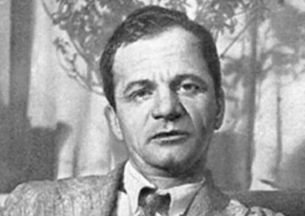

Платонов Андрей Платонович

Годы жизни: 1899–1951
Русский советский писатель, прозаик и драматург ХХ века.
Родился 20 августа 1899 года в Воронеже в рабочей семье, в которой, кроме Андрея, родилось ещё 10 детей. Будучи старшим сыном, Андрей Платонович помогает родителям в воспитании братьев и сестёр, а позже начинает обеспечивать материально.
Из-за трудного материального положения в семье рано начал работать. Сменил он много профессий: был помощником машиниста, литейщиком труб на заводе, работал в страховой сфере, в производстве мельничных жерновов.
Писать стал во время гражданской войны, поскольку работал военным корреспондентом. В 1921 году он публикует свою первую книгу «Электрификация», а в 1922 году в свет выходит книга стихов Платонова «Голубая глубина», получившая положительные отзывы критиков.
Расцвет творчества приходится на 1927–1930 годы, в это время созданы самые значимые романы — «Котлован» и «Чевенгур». Затем писатель получает отрицательный отзыв Сталина, и его произведения перестают публиковать.
Во время Великой Отечественной войны Платонов снова работает корреспондентом. Повести и военные рассказы Платонова снова печатаются.
Умер писатель 5 января 1951 года в Москве от туберкулёза и был похоронен на Армянском кладбище.
Литературная слава к писателю пришла уже после смерти.
Из-за трудного материального положения в семье рано начал работать. Сменил он много профессий: был помощником машиниста, литейщиком труб на заводе, работал в страховой сфере, в производстве мельничных жерновов.
Писать стал во время гражданской войны, поскольку работал военным корреспондентом. В 1921 году он публикует свою первую книгу «Электрификация», а в 1922 году в свет выходит книга стихов Платонова «Голубая глубина», получившая положительные отзывы критиков.
Расцвет творчества приходится на 1927–1930 годы, в это время созданы самые значимые романы — «Котлован» и «Чевенгур». Затем писатель получает отрицательный отзыв Сталина, и его произведения перестают публиковать.
Во время Великой Отечественной войны Платонов снова работает корреспондентом. Повести и военные рассказы Платонова снова печатаются.
Умер писатель 5 января 1951 года в Москве от туберкулёза и был похоронен на Армянском кладбище.
Литературная слава к писателю пришла уже после смерти.